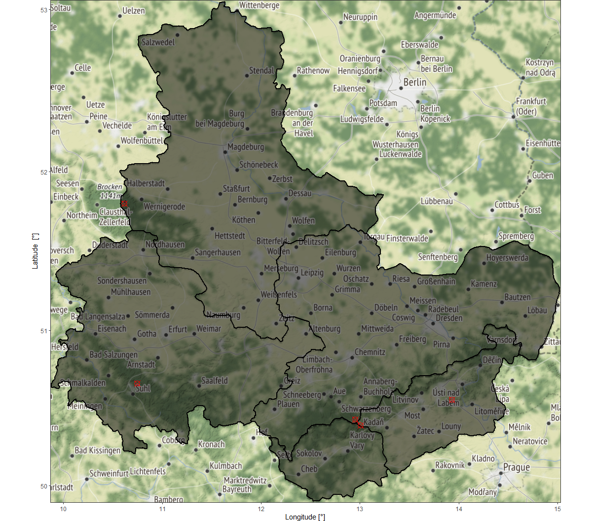

Preparing the Workshop
KrigR is currently undergoing development. As a result, this part of the workshop has become deprecated. Please refer to the setup quick guide portions of this material as these are up-to-date.
R Packages for the Workshop
For the sake of this series of tutorials, we need some extra packages for visualisations. To load them, we use a custom function (install.load.package(), see below). This function checks whether a package is already installed, subsequently install (if necessary) and loads the package. To carry this operation out for several packages, we simply apply it to a vector of package names using sapply():
install.load.package <- function(x){
if (!require(x, character.only = TRUE))
install.packages(x, repos='http://cran.us.r-project.org')
require(x, character.only = TRUE)
}
package_vec <- c("tidyr", # for turning rasters into ggplot-dataframes
"ggplot2", # for plotting
"viridis", # colour palettes
"cowplot", # gridding multiple plots
"ggmap", # obtaining satellite maps
"gimms", # to get some pre-existing data to match in our downscaling
"rnaturalearth", # for shapefiles
"rnaturalearthdata", # for high-resolution shapefiles
"mapview" # for generating mapview outputs
)
sapply(package_vec, install.load.package)
## tidyr ggplot2 viridis cowplot ggmap
## TRUE TRUE TRUE TRUE TRUE
## gimms rnaturalearth rnaturalearthdata mapview
## TRUE TRUE TRUE TRUE
Setting up Directories
The workshop is designed to run completely from scratch. For this to work in a structured way, we create a folder/directory structure so that we got some nice compartments on our hard drives. We create the following directories:
- A Data directory for all of our data downloads
- A Covariate directory for all of our covariate data
- An Exports directory for all of our Kriging outputs
Dir.Base <- getwd() # identifying the current directory
Dir.Data <- file.path(Dir.Base, "Data") # folder path for data
Dir.Covariates <- file.path(Dir.Base, "Covariates") # folder path for covariates
Dir.Exports <- file.path(Dir.Base, "Exports") # folder path for exports
## create directories, if they don't exist yet
Dirs <- sapply(c(Dir.Data, Dir.Covariates, Dir.Exports),
function(x) if(!dir.exists(x)) dir.create(x))
Visualiation Functions
In order to easily visualise our Kriging procedure including (1) inputs, (2) covariates, and (3) outputs without repeating too much of the same code, we have prepared some plotting functions which you can download as FUN_Plotting.R.
With the FUN_Plotting.R file placed in the project directory of your workshop material (i.e., the directory returned by Dir.Base), running the following will register the three plotting functions in your R environment.
source("FUN_Plotting.R")
The plotting functions you have just loaded are called:
Plot_Raw()- we will use this function to visualise data downloaded withKrigRPlot_Covs()- this function will help us visualise the covariates we use for statistical interpolationPlot_Krigs()- kriged products and their associated uncertainty will be visualised using this function
KrigR are what we want to demonstrate here - not visualisation strategies.
Locations of Interest
Our Workshop Target Region
To keep this workshop material concise and make it so you don’t need access to a server of cluster throughout the following demonstrations of KrigR, we will specify a set of locations in which we are interested.
The locations we focus on for this workshop are situated throughout eastern Germany and the north-western parts of the Czech Republic. Why do we focus on this particular part of the Earth? There are three reasons:
- Topographical Heterogeneity - the area we select here contains large swaths of flat lowlands as well as some mountain ridges. This will make for visually pleasing plots and highlight the capability of kriging.
- Geographic Scale - the area we are selecting here hits a certain sweet-spot for our purposes as its size makes it so that all
KrigRfunctions run to completion in a relatively short time. - Familiarity - I was born and grew up in this region and have fond memories of the place. Please excuse my indulging in a bit of nostalgia.
Using a different set of locations than the ones we specify here will change computational load and time as well as disk space required when working through the workshop material.
KrigR will be able to get you the data you want for the locations you desire, but computational requirements will vary.
Spatial Preferences in KrigR
KrigR is capable of learning about your spatial preferences in three ways:
- As an
extentinput (a rectangular box). - As a
SpatialPolygonsinput (a polygon or set of polygons). - As a set of locations stored in a
data.frame.
To demonstrate the range of specifications permitted in KrigR, we make use of all three specifications. As we will see in this tutorial, masking out unnecessary areas from our analyses speeds up Kriging tremendously hence why we strongly suggest you make use of SpatialPolygons or data.frames whenever possible.
Area of Interest (extent)
The simplest way in which you can run the functions of the KrigR package is by specifying a rectangular bounding box (i.e., an extent) to specify your study region(s). We simply specify the longitude and latitude ranges and store the object as an extent:
Extent_ext <- extent(c(9.87, 15.03, 49.89, 53.06))
Shape of Interest (SpatialPolygons)
To define SpatialPolygons for our purposes, I make use of the
NaturalEarthData. Here, I select a set of polygons corresponding to some states in Germany and the Czech Republic:
Shape_shp <- ne_states(country = c("Germany", "Czech Republic"))
Shape_shp <- Shape_shp[Shape_shp$name_en %in% c("Saxony", "Saxony-Anhalt", "Thuringia",
"Ústí nad Labem Region", "Karlovy Vary Region"), ]
naturalhighres package which can give some users troubles.
Here’s a workaround if naturalhighres does not work for you:
download.file("https://www.naturalearthdata.com/http//www.naturalearthdata.com/download/10m/cultural/ne_10m_admin_1_states_provinces.zip",
destfile = "highres.zip")
unzip("highres.zip")
Shape_shp <- readOGR("ne_10m_admin_1_states_provinces.shp")
Shape_shp <- Shape_shp[Shape_shp$name_en %in% c("Saxony", "Saxony-Anhalt", "Thuringia",
"ÃÅ¡stÃÂ nad Labem", "Karlovy Vary"), ]
Points of Interest (data.frame)
Finally, to represent specific points of interest, I have prepared a small data set of mountains for each state in the shapefile above. You can download this file here: Mountains_df.RData. Simply place this file into your data directory and continue the workshop.
Let’s load this data set and quickly visualise it:
load(file.path(Dir.Data, "Mountains_df.RData")) # load an sp object called Mountains_sp
Mountains_df
## Mountain Lon Lat
## 1 Fichtelberg 12.95472 50.42861
## 2 Brocken 10.61722 51.80056
## 3 Großer Beerberg 10.74611 50.65944
## 4 Meluzína 13.00778 50.39028
## 5 Milešovka 13.93153 50.55523
Visualising our Study Setting
To finish our preparations for this workshop, let’s visualise the different locations of interest:
## Establish rectangular bounding box from extent
bbox <- as.numeric(as(Extent_ext, 'SpatialPolygons')@bbox)
names(bbox) <- c("left", "bottom", "right", "top")
## Make locations of mountains into SpatialPoints
Mountains_sp <- Mountains_df
coordinates(Mountains_sp) <- ~Lon+Lat
## download a map of the area specified by the extent
back_gg <- get_map(bbox, maptype = 'terrain')
## combine locations of interest into one plot
ggmap(back_gg, extent = "device") + # plot the extent area
## display the SpatialPolygons area
geom_polygon(aes(x = long, y = lat, group = id), data = fortify(Shape_shp),
colour = 'black', size = 1, fill = 'black', alpha = .5) +
## add the data.frame data
geom_point(aes(x = Lon, y = Lat), data = data.frame(Mountains_sp),
colour = "red", size = 4, pch = 13) +
## some style additions
theme_bw() + labs(x= "Longitude [°]", y = "Latitude [°]") +
theme(plot.margin=unit(c(0, 1, 0, 1),"lines"))

In the above figure, the map area designates the extent specifications while the grey overlay display the SpatialPolygons preference and points of interest (form our data.frame input) are highlighted with red plotting symbols.
KrigR portion of the workshop!
Session Info
## R version 4.0.5 (2021-03-31)
## Platform: x86_64-w64-mingw32/x64 (64-bit)
## Running under: Windows 10 x64 (build 19043)
##
## Matrix products: default
##
## locale:
## [1] LC_COLLATE=English_United Kingdom.1252 LC_CTYPE=English_United Kingdom.1252
## [3] LC_MONETARY=English_United Kingdom.1252 LC_NUMERIC=C
## [5] LC_TIME=English_United Kingdom.1252
##
## attached base packages:
## [1] parallel stats graphics grDevices utils datasets methods base
##
## other attached packages:
## [1] mapview_2.10.2 rnaturalearthdata_0.1.0 rnaturalearth_0.1.0
## [4] gimms_1.2.0 ggmap_3.0.0 cowplot_1.1.1
## [7] viridis_0.6.0 viridisLite_0.4.0 ggplot2_3.3.6
## [10] tidyr_1.1.3 KrigR_0.1.2 httr_1.4.2
## [13] stars_0.5-3 abind_1.4-5 fasterize_1.0.3
## [16] sf_1.0-0 lubridate_1.7.10 automap_1.0-14
## [19] doSNOW_1.0.19 snow_0.4-3 doParallel_1.0.16
## [22] iterators_1.0.13 foreach_1.5.1 rgdal_1.5-23
## [25] raster_3.4-13 sp_1.4-5 stringr_1.4.0
## [28] keyring_1.2.0 ecmwfr_1.3.0 ncdf4_1.17
##
## loaded via a namespace (and not attached):
## [1] bitops_1.0-7 satellite_1.0.2 xts_0.12.1
## [4] webshot_0.5.2 tools_4.0.5 bslib_0.3.1
## [7] utf8_1.2.1 R6_2.5.0 zyp_0.10-1.1
## [10] KernSmooth_2.23-18 DBI_1.1.1 colorspace_2.0-0
## [13] withr_2.4.2 tidyselect_1.1.0 gridExtra_2.3
## [16] leaflet_2.0.4.1 curl_4.3.2 compiler_4.0.5
## [19] leafem_0.1.3 gstat_2.0-7 labeling_0.4.2
## [22] bookdown_0.22 sass_0.4.1 scales_1.1.1
## [25] classInt_0.4-3 proxy_0.4-25 digest_0.6.27
## [28] rmarkdown_2.14 base64enc_0.1-3 jpeg_0.1-8.1
## [31] pkgconfig_2.0.3 htmltools_0.5.2 highr_0.9
## [34] fastmap_1.1.0 htmlwidgets_1.5.3 rlang_0.4.11
## [37] FNN_1.1.3 farver_2.1.0 jquerylib_0.1.4
## [40] generics_0.1.0 zoo_1.8-9 jsonlite_1.7.2
## [43] crosstalk_1.1.1 dplyr_1.0.5 magrittr_2.0.1
## [46] Rcpp_1.0.7 munsell_0.5.0 fansi_0.4.2
## [49] lifecycle_1.0.0 stringi_1.5.3 yaml_2.2.1
## [52] plyr_1.8.6 grid_4.0.5 crayon_1.4.1
## [55] lattice_0.20-41 knitr_1.33 pillar_1.6.0
## [58] boot_1.3-27 rjson_0.2.20 spacetime_1.2-4
## [61] stats4_4.0.5 codetools_0.2-18 glue_1.4.2
## [64] evaluate_0.14 blogdown_1.3 vctrs_0.3.7
## [67] png_0.1-7 RgoogleMaps_1.4.5.3 gtable_0.3.0
## [70] purrr_0.3.4 reshape_0.8.8 assertthat_0.2.1
## [73] cachem_1.0.4 xfun_0.31 lwgeom_0.2-6
## [76] e1071_1.7-6 rnaturalearthhires_0.2.0 class_7.3-18
## [79] Kendall_2.2 tibble_3.1.1 intervals_0.15.2
## [82] memoise_2.0.0 units_0.7-2 ellipsis_0.3.2